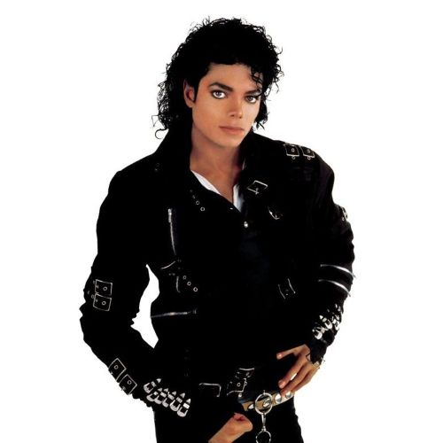

Michael Jackson
O Rei do Pop

Sobre o artista
Michael Joseph Jackson (1958–2009) foi um cantor, compositor, dançarino e filantropo estadunidense. Apelidado de "Rei do Pop", é considerado uma das figuras culturais mais significativas do século XX. Por meio da música, dança e moda, ele revolucionou a performance visual na música pop e popularizou movimentos marcantes como o moonwalk.
BAD (Álbum / Canção)
Lançada em 1987, a faixa retrata temas de atitude urbana e autoconfiança, acompanhada de um videoclipe icônico dirigido por Martin Scorsese.
Your butt is mine, gonna tell you right
Just show your face in broad daylight
I'm tellin' you on how I feel
Gonna hurt your mind, don't shoot to kill
Sha'mon, ah, sha'mon
Lay it on me, alright
I'm givin' you on count of three
Just show your stuff or let it be
I'm tellin' you just to watch your mouth
I know your game, what you're about
Well, they say the sky's the limit
And to me, that's really true
But my friend, you have seen nothing
Just wait till I get through
Because I'm bad (bad), I'm bad (bad)
Sha'mon (really, really bad)
You know I'm bad (bad), I'm bad (bad)
You know it (really, really bad)
You know I'm bad (bad), I'm bad (bad)
Sha'mon (really, really bad), you know
And the whole world has to answer right now
Just to tell you once again
The word is out, you're doin' wrong
Gonna lock you up before too long
Your lyin' eyes gonna tell you right
So listen up, don't make a fight
Your talk is cheap, you're not a man
You're throwin' stones to hide your hands
Well, they say the sky's the limit
And to me, that's really true
But my friend, you have seen nothing
Just wait till I get through
Because I'm bad (bad), I'm bad (bad)
Sha'mon (really, really bad)
You know I'm bad (bad), I'm bad (bad)
You know it (really, really bad)
You know I'm bad (bad), I'm bad (bad)
You know it (really, really bad), you know
And the whole world has to answer right now
Just to tell you once again
We can change the world tomorrow
This could be a better place
If you don't like what I'm sayin'
Then won't you slap my face?
Because I'm bad (bad), I'm bad (bad)
Sha'mon (really, really bad)
You know I'm bad (bad), I'm bad (bad)
You know it (really, really bad)
You know I'm bad (bad), I'm bad
You know it (really, really bad), you know
And the whole world has to answer right now
You know I'm bad (bad), I'm bad (bad)
Sha'mon (really, really bad)
You know I'm bad (bad), I'm bad (bad)
You know it (really, really bad)
You know it, you know, you know
You know, come on (really, really bad)
And the whole world has to answer right now
You know I'm smooth (bad), I'm bad (bad)
You know it (really, really bad)
You know I'm bad (bad, bad)
I'm bad (really, really bad)
You know it, you know, you know
You know, come on (really, really bad)
And the whole world has to answer right now
You know I'm bad (bad), I'm bad (bad)
You know it (really, really bad)
You know I'm bad (bad)
You know it (really, really bad)
You know I'm bad (bad), I'm bad (bad)
You know it (really, really bad)
You know (really, really bad)
And the whole world has to answer right now